Guida enciclopedica alla natura norvegese — la spettacolare biodiversità artica, i fiordi millenari, le Lofoten e gli ecosistemi marini.
La Norvegia offre uno dei paesaggi naturali più drammatici e incontaminati del pianeta. Dalle profondità abissali dei fiordi alle vette frastagliate delle Lofoten, la corrente del Golfo mitiga un clima che altrimenti sarebbe inospitale, permettendo l'esistenza di ecosistemi unici e di una ricchissima fauna artica e subartica.
La vegetazione norvegese è fortemente influenzata dall'altitudine e dalla latitudine. A causa del clima rigido, solo il 3% del territorio è coltivabile, mentre il resto è diviso tra foreste, montagne e tundra.
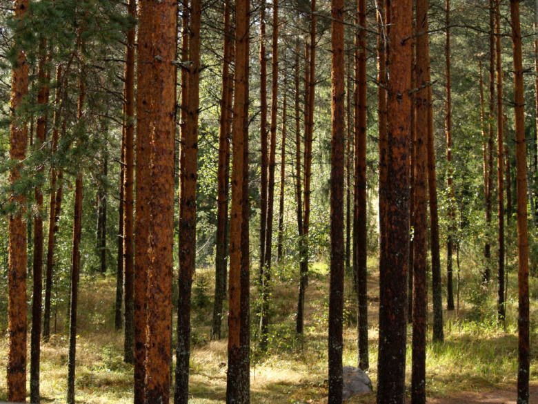
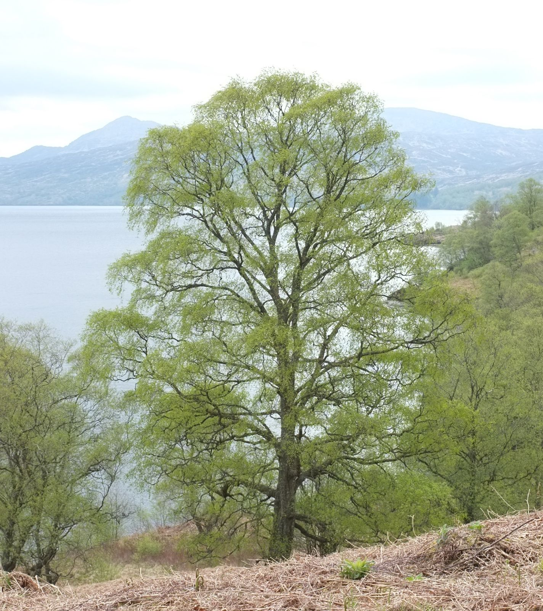
Come in gran parte della Scandinavia, la foresta boreale copre le zone interne, ma la costa e l'altopiano presentano adattamenti unici.
Il diritto di libero accesso alla natura (Allemannsretten) permette la raccolta di frutti spontanei, un'attività radicata nella cultura norvegese.
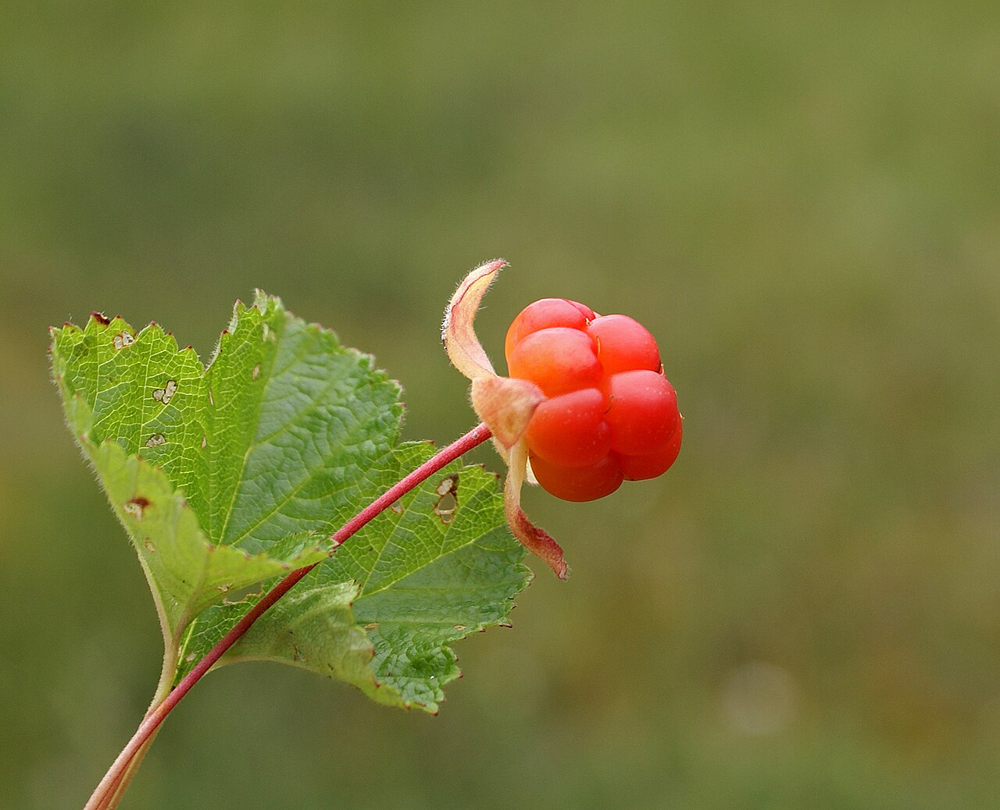
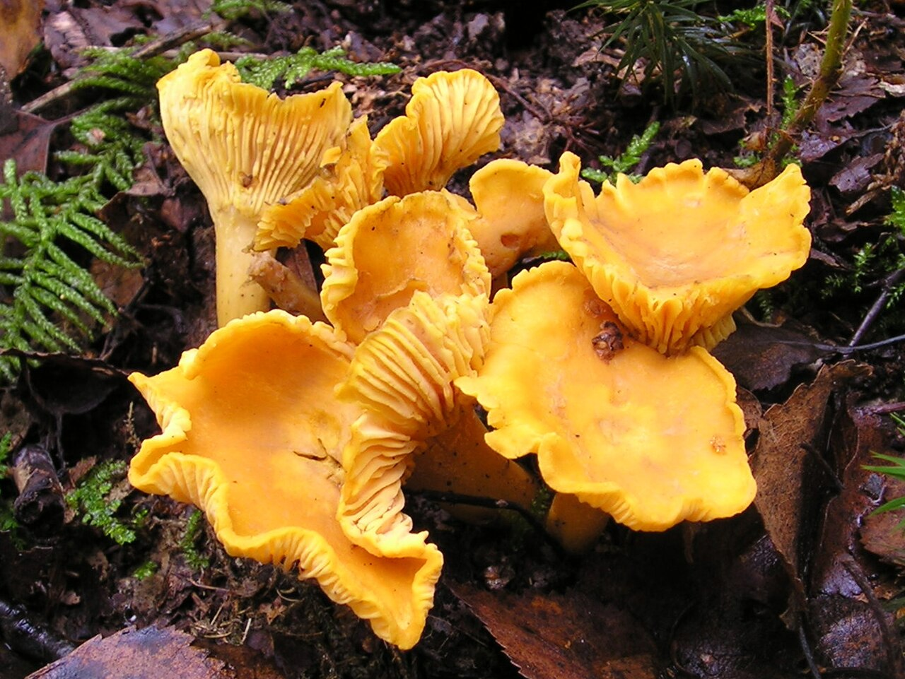
La Norvegia ospita alcune delle popolazioni selvatiche più spettacolari d'Europa, con una netta divisione tra la fauna terrestre dell'entroterra e la ricchissima vita marina della costa.
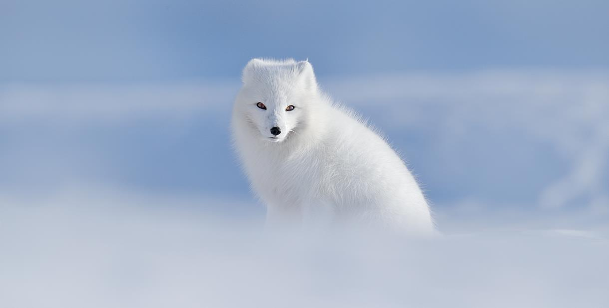
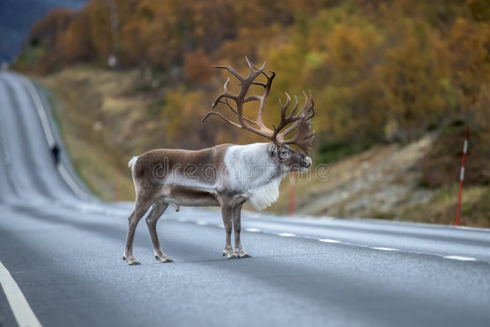
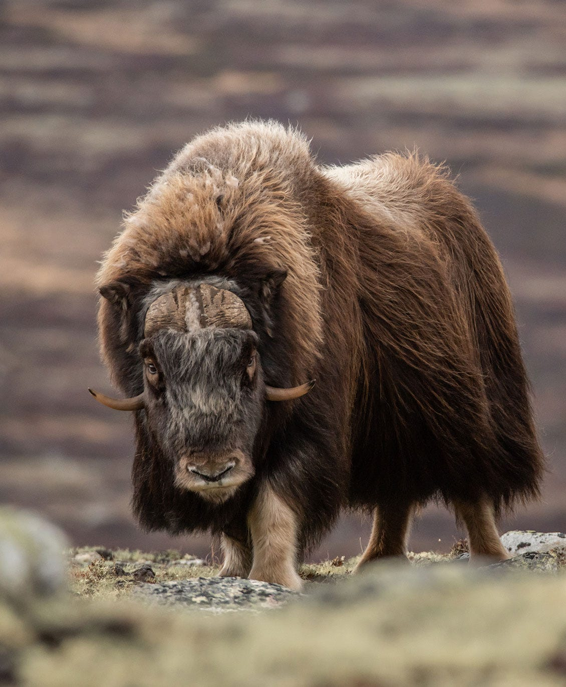
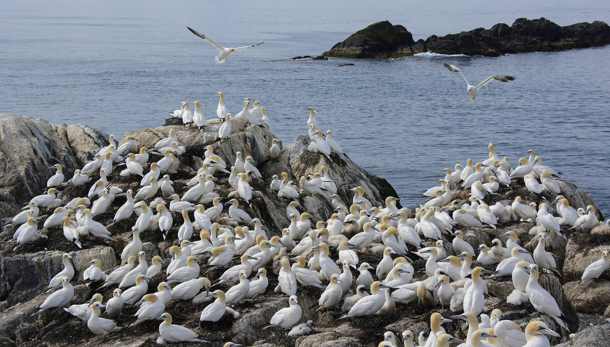
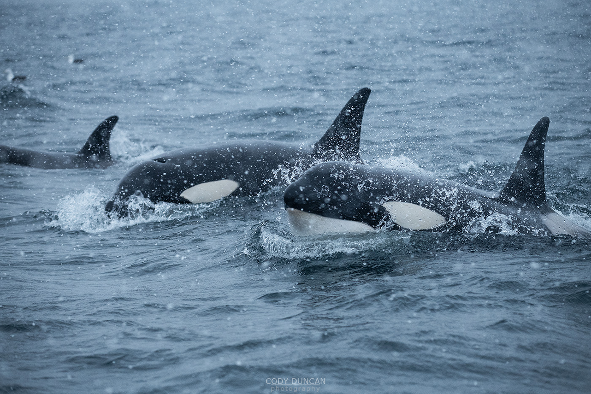
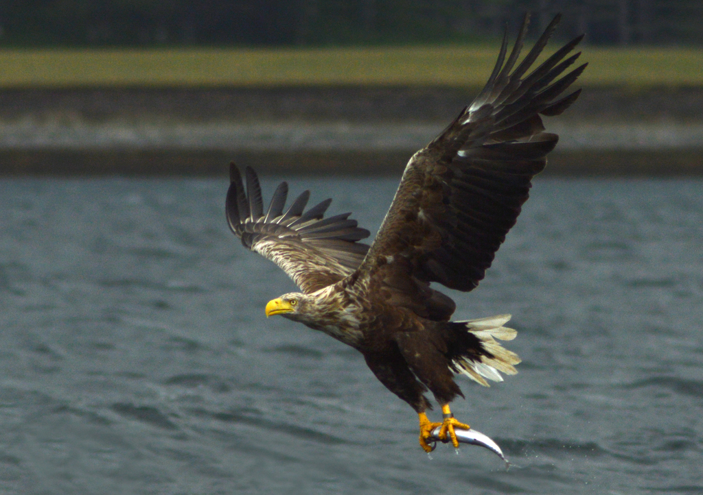
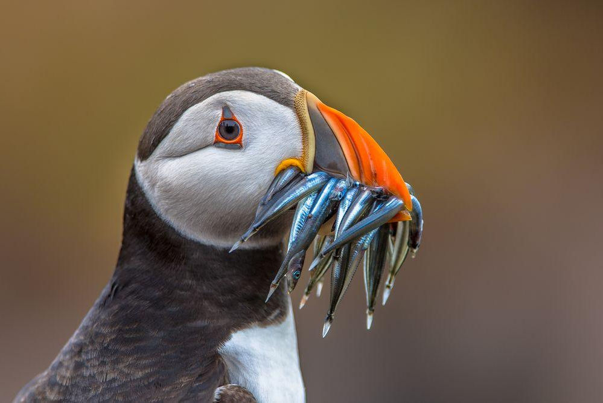
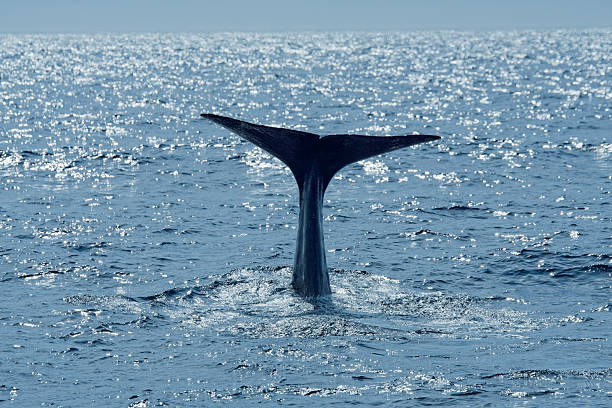
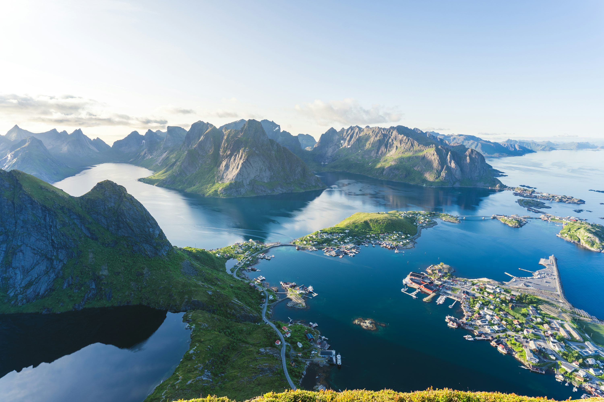
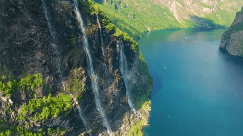
Il paesaggio norvegese è un libro di storia geologica aperto, scolpito dalla violenza dei ghiacci e dal sollevamento della crosta terrestre.
La Norvegia poggia in gran parte sul Cratone Baltico (o Scudo Baltico), un pezzo di crosta terrestre primordiale. Nelle isole Lofoten e Vesterålen, la roccia affiorante (gneiss e granito) ha un'età sbalorditiva di circa 3 miliardi di anni, rendendola una delle formazioni rocciose più antiche d'Europa. Questa stabilità crostale ha permesso alle rocce di sopravvivere a innumerevoli ere geologiche.
I fiordi non sono stati scavati dai fiumi, ma dai ghiacciai. Durante le ultime ere glaciali, l'intera Scandinavia era coperta da una calotta di ghiaccio spessa fino a 3 km.
Circa 425 milioni di anni fa, la placca continentale della Groenlandia/Nord America si è schiantata contro l'Europa. L'impatto titanico ha sollevato la Catena Caledoniana, montagne che all'epoca erano alte come l'odierno Himalaya (fino a 10.000 metri). L'erosione di centinaia di milioni di anni le ha ridotte alle attuali Alpi Scandinave (la cui vetta massima, il Galdhøpiggen, tocca oggi i 2.469 metri).
Essendo attraversata dal Circolo Polare Artico (66°33' N), la Norvegia sperimenta estremi luminosi che dettano i ritmi della natura e dell'uomo.
A nord del Circolo Polare, in estate, l'inclinazione dell'asse terrestre fa sì che il sole non tramonti mai completamente. Alle isole Lofoten (68° N), il sole rimane costantemente sopra l'orizzonte dal 26 maggio al 17 luglio (circa 52 giorni consecutivi). Questo fenomeno stimola una crescita vegetale esplosiva e permette agli uccelli marini di cacciare 24 ore su 24 per nutrire i pulcini.
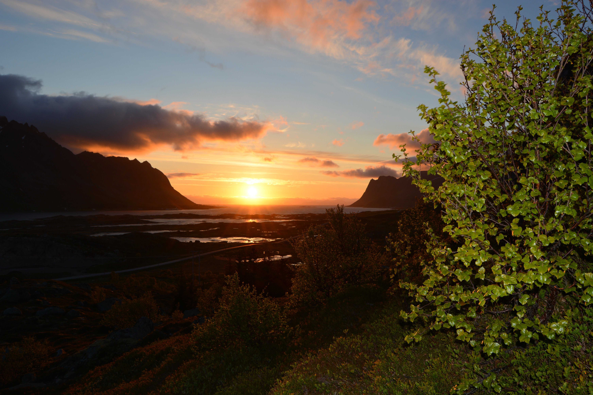
Uno dei fenomeni di marea più potenti e pericolosi al mondo. Si verifica tra la punta meridionale delle Lofoten (Moskenesøya) e l'isolotto isolato di Mosken. A differenza della maggior parte dei gorghi che si formano in stretti canali, il Moskstraumen si forma in mare aperto. È causato dall'enorme massa d'acqua che le maree spingono avanti e indietro tra il Vestfjord e il Mare di Norvegia, scontrandosi con una complessa topografia sottomarina. Ha ispirato Edgar Allan Poe e Jules Verne.
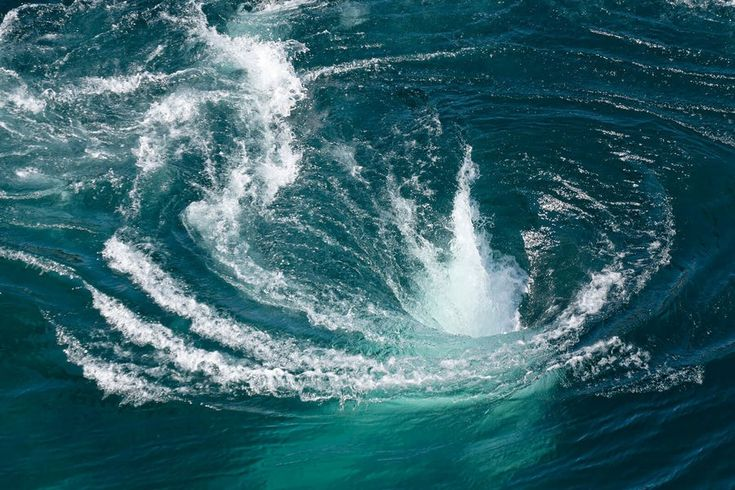
Sotto la superficie gelida dei fiordi e lungo la costa frastagliata si nascondono ecosistemi tanto ricchi quanto quelli terrestri.
Le fredde acque costiere norvegesi ospitano vaste "foreste" sottomarine di alghe brune giganti (kelp). Queste foreste sono tra gli ecosistemi più produttivi della Terra e fungono da vivaio vitale per innumerevoli specie ittiche, tra cui il famoso merluzzo artico norvegese (Skrei). Negli anni '70, uno squilibrio ecologico (forse legato alla pesca eccessiva dei predatori) ha causato un'esplosione demografica di ricci di mare verdi, che hanno divorato e distrutto oltre 2.000 km² di foreste di kelp. Oggi, progetti di ripristino massicci stanno lentamente riportando in vita questo habitat cruciale.
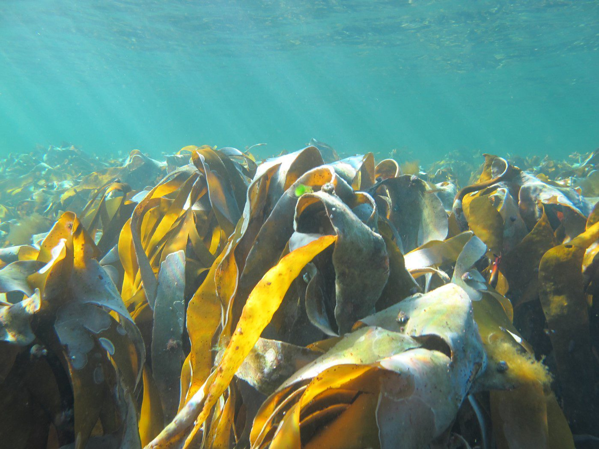
Non tutti i coralli vivono ai tropici. I fiordi norvegesi e la piattaforma continentale ospitano alcune delle più grandi barriere coralline di acqua fredda del mondo, formate principalmente dalla specie Lophelia pertusa. Crescono nella totale oscurità, tra i 40 e i 1.000 metri di profondità, nutrendosi del plancton trasportato dalle forti correnti. Il Røst Reef, situato al largo delle Lofoten, è la più grande barriera corallina di acque profonde conosciuta al mondo: lunga 43 km e larga quasi 7 km.
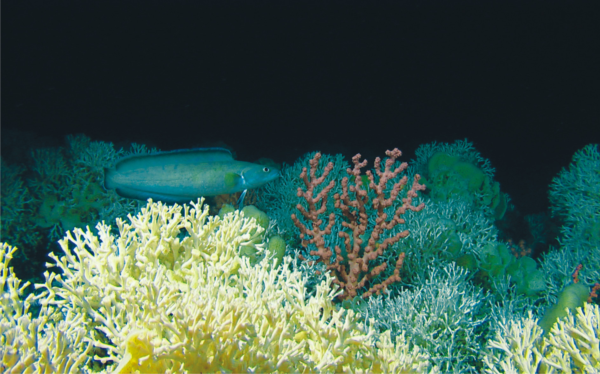
Fonti: Norsk Polarinstitutt, Institute of Marine Research (HI), Visit Norway, Geological Survey of Norway (NGU).